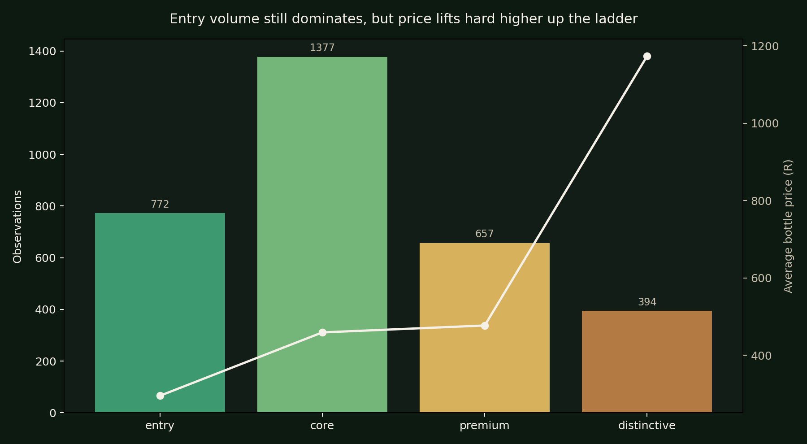
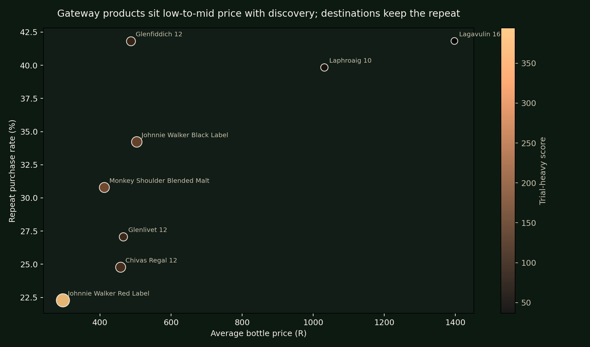
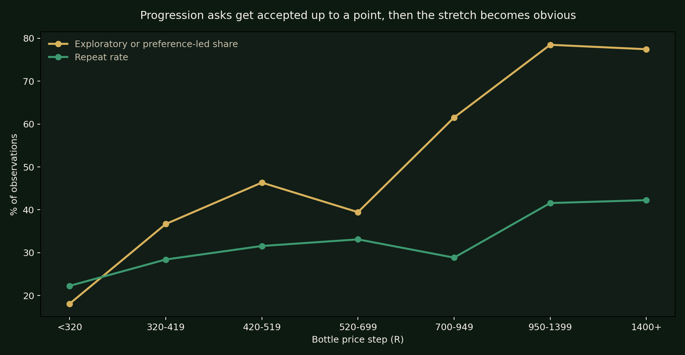
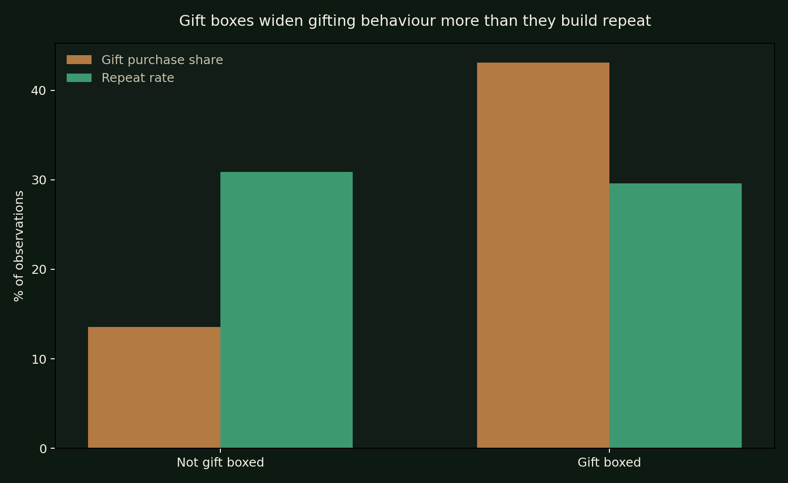
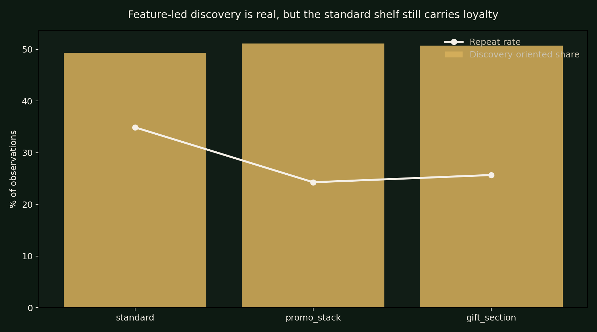
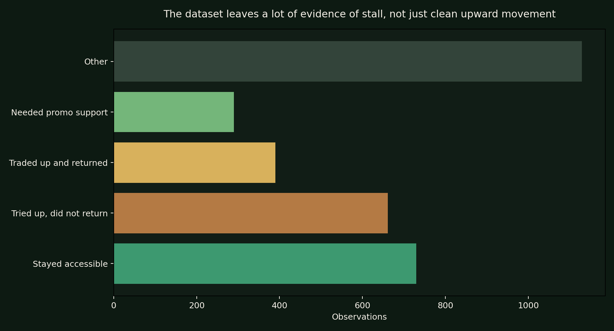

Dataset rows
3,200
Synthetic purchase and exposure observations across eight fixed Scotch expressions.
This is not a sales dashboard. It asks a more useful retail question: which bottles help a shopper move up, where does that movement tighten on price, and what on-shelf signals create trial without building loyalty?
Synthetic purchase and exposure observations across eight fixed Scotch expressions.
Present, useful, and intentionally sparse enough to avoid looking like a perfect loyalty system.
The dataset stays rough around the edges so the retail story feels observed, not polished flat.
Progression begins with confidence and recognition long before it reaches distinctive preference.
Retail teams can already see which Scotch bottles move. What is harder to see is whether the category is creating believable movement from safe and familiar bottles into more specific, more premium, and more preference-led buying. That is the lens used here.
The case tracks product role, shelf location, gifting cues, display type, and imperfect repeat behaviour. The goal is to separate one-off premium moments from actual movement up the ladder, while keeping the scoring logic visible enough to inspect.
Looks like the most credible step-up without asking the shopper to abandon familiarity.
Much smaller pool, but stronger signs of commitment once the buyer gets there.
They expand occasion buying faster than they build routine repeat.
Discovery needs theatre, but loyalty still shows up where bottles remain easy to find.
The volume base remains familiar and accessible. Premium and distinctive expressions matter because they change value and preference, not because they dominate count. That makes the bridge products more important than a simple cheapest-versus-most-expensive ranking.

Entry and core still carry the category day to day, while premium and distinctive sharply lift price without taking over the whole shelf story.

Gateway products sit where price is still manageable and self-purchase remains comfortable. Destination products are narrower, but they hold stronger repeat once preference is formed.
The useful tension in this model is that exploratory interest keeps rising into the first visible step-up zone, but repeat does not rise with it. That is usually where interest stops being the same thing as comfort.

The `R320-R420` jump is the first place where progression starts to look fragile. Shoppers are willing to browse upward before they are willing to live there repeatedly.
Gift boxes matter because they help create premium trial without necessarily creating preference-led self-purchase. That is useful commercially, but it should not be mistaken for loyalty.

Gift-boxed bottles over-index in gift buying. The lift is real, but the follow-up repeat story is softer.
A bottle that works in a gifting moment still needs standard shelf support, flavour clarity, and a believable price step if it is going to move into someone's own routine later.
Feature displays and gift sections are useful for attention. Standard shelf conditions are where habitual, lower-theatre repeat becomes more visible. That distinction helps explain why some bottles create buzz without necessarily building a base.

Feature-led discovery is visible, but repeat is steadier where the shelf feels familiar and easy to return to.

The dataset preserves plenty of stall: shoppers who stay accessible, try upward without returning, or need promo support before stepping up.
The point of the project is to make progression legible in a retail setting. These are the six key reads that hold the argument together, plus the underlying files and links back to the wider III.IV portfolio.
It has the best mix of recognisable comfort, self-purchase confidence, and step-up intent.
It wins less often, but it wins with stronger signs of preference-led repeat.
The first clear progression tension appears in the R320-R420 step, well before the most distinctive bottles.
It gets premium bottles into baskets, but does not automatically turn them into habits.
Feature displays drive attention, but standard shelf presence does more of the repeat work.
Certain premium bottles invite curiosity faster than they earn a place in someone's regular rotation.
| File | Rows | Purpose |
|---|---|---|
| scotch_progression_observations.csv | 3,200 | Purchase and shelf observations across products, retail context, behaviour, and messy text cues |
| scotch_progression_intelligence.ipynb | 8 sections | Notebook walkthrough of progression, friction, gifting, display influence, and stall |
| insights.md | 6 insights | Decision-oriented findings for commercial and category discussion |
| validation_summary.json | 6 key reads | Quick snapshot of gateway, destination, friction point, and scoring rules |
The standalone page carries the visual story. The III.IV case file holds the portfolio framing, and the GitHub repository contains the dataset, notebook, charts, and build files.